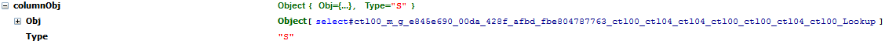

SPDropdownCtl
Function
$().SPServices.SPDropdownCtl
Certification


Functionality
SPDropdownCtl was previously a private function I used in SPServices to find dropdown controls in the DOM. Because of the changes to the way title values are set in Office365 circa Jan 2014, it made sense to expose this as a public function. By making this a public function, it is my hope that it will help to smooth over any future changes to the way SharePoint renders this type of control in the DOM.
The function finds a dropdown in a form based on the name of the column (either the DisplayName or the StaticName) and returns an object you can use in your own functions.
Prerequisites
None
Syntax
$().SPServices.SPDropdownCtl({
displayName: ""
});
displayName
The DisplayName of the parent column in the form
Returns
The function returns a JavaScript object with information about the dropdown column. Depending upon the type of dropdown, the object will contain different values, like so:
If the column is a simple dropdown, the object will be:
[
For a complex dropdown (note that complex dropdowns will only be present in SharePoint 2007 & 2010 with Internet Explorer):
{
Type: "C",
Obj: [reference to the **input** element for the dropdown]
}
For a multi-select "dropdown", as with a lookup column which allow multiple selections:
[
Example
Probably the best example for this function is how I use it inside SPCascadeDropdowns.
First I call SPDropdownCtl to find the parent column in the page:
// Find the parent column's select (dropdown)
var parentSelect = $().SPServices.SPDropdownCtl({
displayName: opt.parentColumn
});
Then later in the function, I have this logic to bind to the various events needed to detect changes to the "dropdown":
switch (parentSelect.Type) {
// Plain old select
case dropdownType.simple:
parentSelect.Obj.bind("change", function() {
cascadeDropdown(opt.parentColumn, parentSelect);
});
break;
// Input / Select hybrid
case dropdownType.complex:
// Bind to any change on the hidden input element
$("input[id='" + parentSelect.Obj.attr("optHid") + "']").bind("propertychange", function() {
cascadeDropdown(opt.parentColumn, parentSelect);
});
break;
// Multi-select hybrid
case dropdownType.multiSelect:
// Handle the dblclick on the candidate select
$(parentSelect.master.candidateControl).bind("dblclick", function() {
cascadeDropdown(opt.parentColumn, parentSelect);
});
// Handle the dblclick on the selected values
$(parentSelect.master.resultControl).bind("dblclick", function() {
cascadeDropdown(opt.parentColumn, parentSelect);
});
// Handle button clicks
$(parentSelect.master.addControl).bind("click", function() {
cascadeDropdown(opt.parentColumn, parentSelect);
});
$(parentSelect.master.removeControl).bind("click", function() {
cascadeDropdown(opt.parentColumn, parentSelect);
});
break;
default:
break;
}
Note that I have a variable defined that I use to keep track of the type of dropdown I'm dealing with. When you call the function, you'll get back one of these values for Type: ["S", "C", "M"]
// Dropdown Types
var dropdownType = {
simple: "S",
complex: "C",
multiSelect: "M"
};